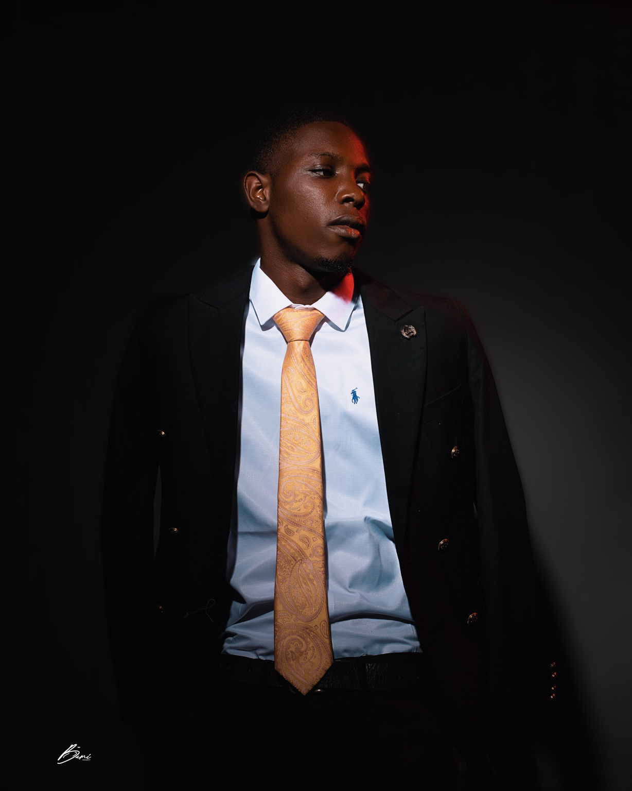
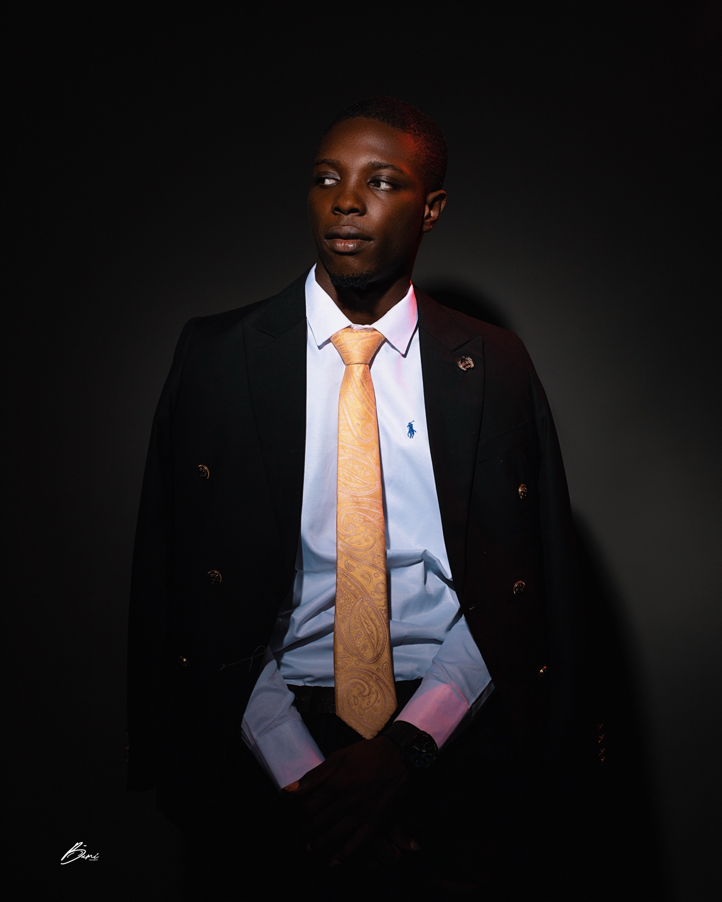

Meet Olukunle Stephen.
A personal introduction to the person behind the career, ideas and brands.
Still becoming.
My name is Olukunle Stephen Gbolahan. I am a Human Resource Management graduate with interests across people, business, creativity, technology and entrepreneurship.
I am building my professional identity one experience at a time. I value learning, authenticity and the discipline to keep moving even when the path is not completely clear.
“You do not have to have everything figured out before you begin.”


Human Resource Management.
I studied Human Resource Management at Lagos State University (LASU), building an academic foundation in people, organizations and workplace practices.
My education is one part of a wider journey of practical learning and professional development.